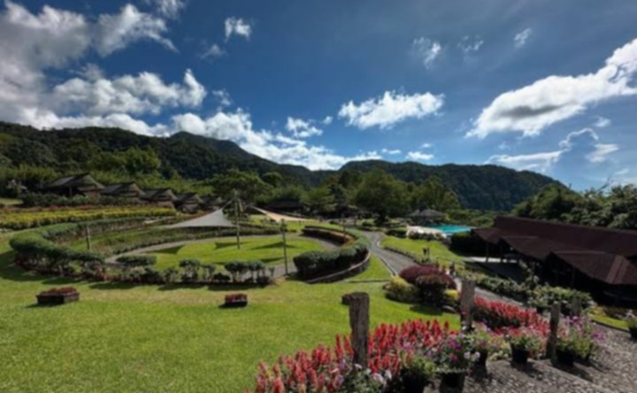

Ilaya at Ilawod
Pagkilala sa kahulugan ng Ilaya at Ilawod at sa iba't ibang pangkat ng taong naninirahan sa mga kaugnay na lugar.
Ilaya at Ilawod
Ang Ilaya ay nangangahulugan ng lugar na nasa mataas o pa-bundok na bahagi.
Ang Ilawod naman ay nangangahulugan ng lugar na malapit sa dagat o mababang bahagi.
Ilaya

Ang Ilaya ay tumutukoy sa mga lugar na nasa mataas o kabundukang bahagi.
Igorot (Cordillera)
Isang pangkat ng mga katutubo na
naninirahan sa kabundukan ng Cordillera.
Ifugao
Matatagpuan sa Cordillera Region. Kilala sa Banaue Rice Terraces, na tinatawag na Ika-walong Kababalaghan sa Mundo.
Bontoc
Isang pangkat na kilala sa kanilang pamumuhay sa kabundukan at paggawa ng hagdang palayan.
Kankanaey
Matatagpuan sa Benguet at Mountain Province.
Ibaloi
Matatagpuan sa Benguet, Baguio, at La Trinidad.
Ilawod
Ang Ilawod ay tumutukoy sa mga pangkat at pamayanang nakaugnay sa mga mabababang lugar at katubigan.
Ang mga pamayanang nasa Ilawod ay kadalasang umaasa sa pangingisda, kalakalan, at ugnayan sa mga karatig na lugar.
Badjao
Madalas matatagpuan sa Tawi-Tawi, Sulu, at Zamboanga. Paglalayag at pangingisda ang pangunahing pamumuhay.
Tagbanua
Matatagpuan sa Palawan. Malapit sa baybayin at mayaman sa yamang dagat.
Ivatan
Matatagpuan sa Batanes.
Pagkakaugnay
"Ang pag-aasahan ang pundasyon ng kapayapaan at seguridad."